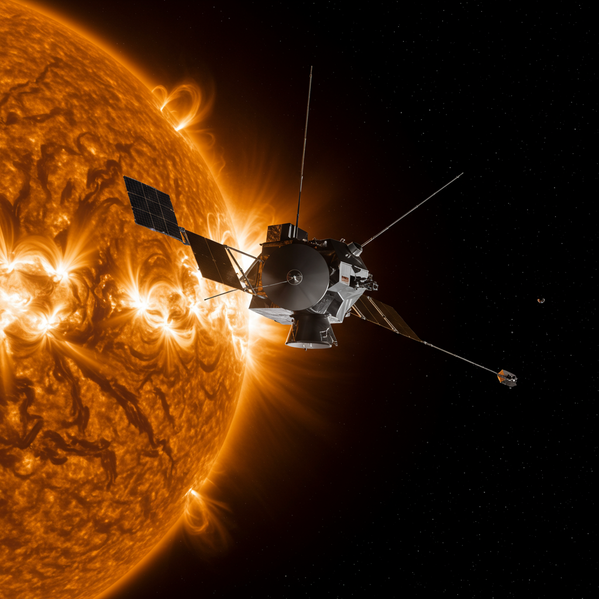

Sonda Parker Solar Probe
Agencia: NASA (Administración Nacional de Aeronáutica y el Espacio)
Fecha de lanzamiento: 12 de agosto de 2018
Tipo de misión: Sonda solar, la primera nave espacial en "tocar" el Sol
Instrumentación
Parker Solar Probe está equipada con un escudo térmico de carbono de 4.5 pulgadas de espesor y una serie de instrumentos robustos para operar en condiciones extremas cerca del Sol:
- FIELDS: Mide campos eléctricos y magnéticos, ondas de radio y la densidad de electrones.
- SWEAP (Solar Wind Electrons Alphas and Protons): Mide las propiedades de los electrones, protones e iones de helio del viento solar.
- IS☉IS (Integrated Science Investigation of the Sun): Estudia las partículas energéticas del Sol.
- WISPR (Wide-field Imager for Parker Solar Probe): Un telescopio para tomar imágenes de la corona solar y el viento solar.
Actividades Notables
La Parker Solar Probe realiza una serie de sobrevuelos cercanos al Sol, cada vez acercándose más:
- Realiza maniobras de asistencia gravitatoria con Venus para acercarse al Sol.
- Se sumerge repetidamente en la atmósfera exterior del Sol (la corona).
- Ha establecido récords de velocidad y proximidad al Sol para cualquier objeto hecho por el hombre.
- Recopila datos directamente de la corona solar para comprender el viento solar y el calentamiento coronal.
Impacto Histórico y Descubrimientos
Parker Solar Probe está revolucionando nuestra comprensión de nuestra estrella:
- Está proporcionando mediciones directas de la atmósfera externa del Sol, un entorno nunca antes explorado.
- Ha descubierto el origen de los "switchbacks" (inversiones repentinas en el campo magnético del Sol).
- Está ayudando a resolver el misterio de por qué la corona solar es mucho más caliente que la superficie del Sol.
- Sus datos son cruciales para mejorar las predicciones del clima espacial, que afectan la tecnología en la Tierra.
Estado Actual
La Parker Solar Probe se encuentra actualmente ACTIVA Y EN MISION, continuando sus sobrevuelos orbitales alrededor del Sol.
La misión está programada para continuar hasta al menos 2025, realizando acercamientos cada vez más cercanos a la superficie solar. Sigue enviando datos valiosos que están transformando nuestra comprensión del Sol y sus fenómenos. Su escudo térmico y su ingeniería avanzada le permiten sobrevivir en un entorno de calor y radiación extremos.